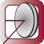

RP Resonator – Advanced Software for
Laser Resonator Design and Optimization
| Start | Purpose | Model | Versions | Interface | Demos |
Example Case: Ti:sapphire Laser
We consider a mode-locked titanium–sapphire laser, where the laser resonator contains a prism pair for dispersion compensation. The resonator setup:
diagram 1, size_px = (600, 280): "Resonator Setup" draw resonator, direction = 2 * th1 ["a = ", a:d3:"m"], 400, 500 ["b = ", b:d3:"m"], 400, 550 ["d = ", d:d3:"m"], 400, 600 ["e = ", e:d3:"m"], 400, 650 ["f = ", f:d3:"m"], 400, 700 ["g = ", g:d3:"m"], 400, 750 ["h = ", h:d3:"m"], 400, 800 ["R1 = ", R1:d3:"m"], 600, 500 ["R2 = ", R2:d3:"m"], 600, 550 ["R3 = ", R3:d3:"m"], 600, 600 ["f_rep = ", f_rep:d3:"Hz"], 600, 650 ["GDD = ", GDD / 1e-15^2:f0:"fs^2"], 600, 700 ["tau_soliton = ", tau_soliton:d3:"s"], 600, 750 ["S_SESAM = ", S_SESAM:d3], 600, 800
Here, we have displayed some resonator parameters such as arm lengths and mirror curvatures, and also some calculated resonator properties such as the total chromatic dispersion and the soliton pulse duration. The GDD (group delay dispersion) is automatically calculated by the software, whereas the expected soliton pulse duration has been calculated with a few lines of script code (not shown here), taking into account calculated properties such as the mode area in the laser crystal and a given average output power. The ability to display user-defined calculated quantities means that RP Resonator can often be used not only for designing the laser resonator as such but the whole laser system. For example, one can already consider the pulse formation via Q switching or mode locking. In that way, one can avoid switching between different programs for different aspects.
Now we plot the beam radius versus position:
diagram 2: "Beam Radius vs. Position" x: 0, L_res / cm "z position (cm)", @x, font = Arial, size = %5 y: 0, 1500 "beam radii (µm)", @y, font = Arial, size = %5 legpos 500, 120, size = %4 frame hx hy f: w_t(x * cm, lambda_ref) / um, "tangential direction", color = red, width = 3, step = 1 f: w_s(x * cm, lambda_ref) / um, "sagittal direction", color = blue, width = 3 "OC", (0)l, (w_t(0, lambda_ref) / um)b "R1", (zm[M1] / cm)c, (w_t(zm[M1], lambda_ref) / um)b "R2", (zm[M2] / cm)c, (w_t(zm[M2], lambda_ref) / um)b "R3", (zm[M3] / cm)c, (w_t(zm[M3], lambda_ref) / um)b
Next, we plot the beam radius at various positions as functions of the arm length e:
diagram 3:
"Beam Radii versus Length e"
x: 3.2, 3.6
"length e (cm)", @x
y: 0, 100
"beam radii (µm)", @y
legpos 500, 120, size = %4
frame
hx
hy
! e0 := e { save original value }
f: (Init (e := x * cm); w(zm[crystal], lambda_ref) / um),
maxconnect = 0.2, step = 3, "w(crystal)", color = black, width = 3
f: (Init (e := x * cm); w(zm[OC], lambda_ref) / um) / 10,
maxconnect = 0.4, step = 3, "w(OC) / 10", color = blue, width = 3
f: (Init (e := x * cm); w(zm[SESAM], lambda_ref) / um),
maxconnect = 0.4, step = 3, "w(SESAM)", color = red, width = 3
f: (Init (e := x * cm); abs(dx(zm[crystal], lambda_ref)) / um),
maxconnect = 0.4, step = 3, "|dx(crystal)|", style = dotted, width = 3
! Init(e := e0) { restore original value }
The dotted curve shows the beam offset caused by a slight misalignment of the output coupler mirror. This gives information on the alignment sensitivity of the resonator, which diverges at the right edge of the first stability zone.
Finally, we make a 2D color plot, showing the beam radius in the laser crystal as a function of the dioptric power of the crystal and the arm length e. The somewhat surprising form results from the fact that strong astigmatism occurs for some regions of the diagram.
(back to the list of example cases)